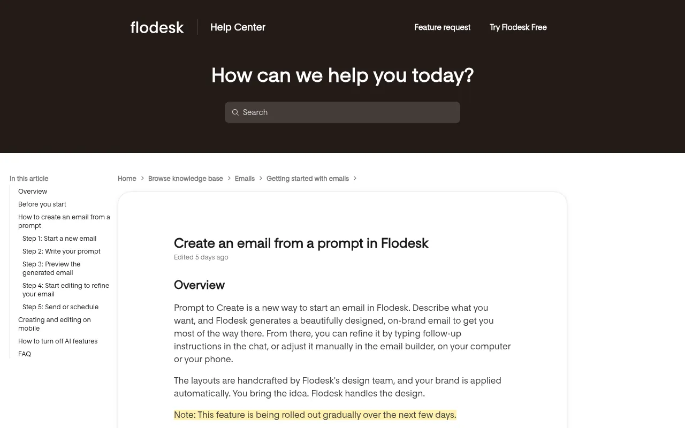
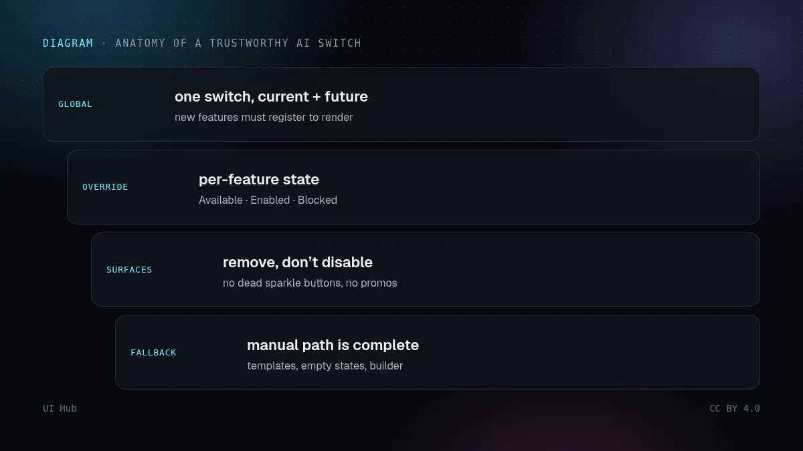
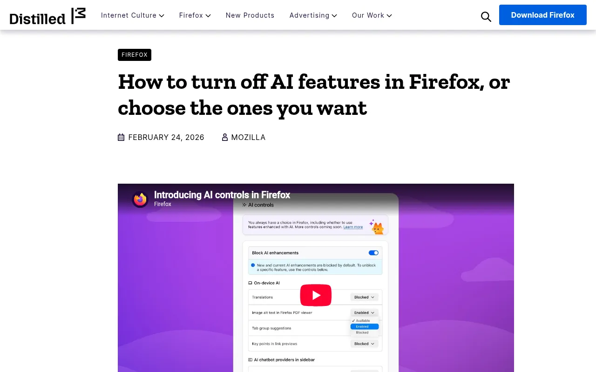

11 月 17 日，面向小商家和创作者的邮件营销平台 Flodesk，把它的「一句话生成邮件」设计工具 Flodesk Studio 并入了主产品。同一次发布还加了官方所说的 AI 关闭开关（AI kill switch）：在 账户设置 → AI 里，一个开关就能关掉账号里所有 AI 功能，包括一句话生成、主题行生成和「润色文字」。关掉之后，新建邮件时不再出现 Prompt to Create 入口，随时可以再打开。发布稿说得很直白：大多数公司拒绝做这个开关，或者他们的关闭开关并不能真正关掉 AI。

Flodesk 不是第一个。2026 年 2 月 24 日推送的 Firefox 148 在桌面版设置里加了 AI 控制一栏：一个「阻止 AI 增强功能」总开关，外加逐项功能的控制。和 Flodesk 同一天，面向学生媒体的建站平台 SNO 上线了 AI 设计组件，给出的是另一种承诺：AI 永远看不到你的报道和照片，因为代码在 SNO 之外生成、由你自己粘贴进来。三个产品，三种告诉用户「AI 到哪里为止」的方式。对设计 AI 产品的人来说，关闭开关正在变成界面的一部分，而不是法律页面里的附注。

一个标着「AI」的开关，只有当用户能准确预料拨动后会发生什么时，才值得信任。这让一行设置变成了四个设计决策。
第一，把范围说清楚，正反两面都要说。列出会关掉什么，也说明不会关掉什么。Flodesk 列出了三个功能；Firefox 划清了生成式功能和老式机器学习的界线。单写一个「AI」太含糊：除非你说明，用户会以为垃圾邮件过滤、搜索排序、自动补全都包括在内。微软 2019 年的《人机交互指南》里早有一条（「提供全局控制」）；变化在于，现在用户会主动去找这个开关。
第二，关掉就是消失，而不是变灰。两个产品都是移除入口而不是禁用入口，Firefox 还会停掉推广弹窗。一个还看得见却点不动的闪光按钮，或者下周又冒出来的「试试 AI」横幅，都在告诉用户这个开关只是摆设。「未来」这部分也很重要：只覆盖现有功能的开关，会被你下一次发布打破。
第三，没有 AI 的路径必须是完整的产品。只有关掉 AI 后一切照常能用，关闭开关才是诚实的。Flodesk 能提供这个开关，是因为它的完整编辑器早于 Studio 就存在。如果你的新手引导、空状态或模板已经默认由 AI 写第一稿，关掉 AI 就会让用户对着空白屏幕。把「开关关闭」当成一等流程来测试，像其他状态一样截图。
第四，功能开关和数据承诺要分开。「我的产品里出不出现 AI？」和「AI 看到了什么、会不会拿去训练？」是两个问题。SNO 根本没有开关，只回答了第二个问题；Flodesk 在不同地方分别回答了两个。用户会把开关理解成对他最担心那个问题的回答，所以在开关下方紧跟一句数据说明。
最后，它终究是个开关，老规矩依然适用。Nielsen Norman Group 的建议是：开关应当立即生效，标签要清楚。如果关掉 AI 还要点保存、刷新页面或确认弹窗，就换一种控件，或者修好流程。

# 把这段贴给你的设计或编程智能体
给这个应用加一个全局「AI 功能」设置。
- 先列出你能找到的每个 AI 触点（按钮、菜单、建议、
AI 生成的默认值、新手引导、推广），附文件路径。等我确认清单。
- 建一个 AI 功能注册表（id、大白话名称），所有触点都经过它：
全局开 / 关，加逐项覆盖。新的 AI 功能必须注册后才能渲染。
- 关闭时移除入口和推广，不显示禁用按钮；
用手动路径或非 AI 的空状态填补空位。
- 设置文案：标题、一句话说明关掉什么、一句话说明保留什么，
再链接数据政策。立即生效，不要保存按钮。
- 在服务端持久化这个选择。然后在 AI 开 / 关、亮色 / 暗色、
1280px 和 390px 下截图主要流程。UI Hub 相关阅读：智能体的审批界面、AI 生成界面的无障碍，以及AI 界面的原生弹层与对话框。